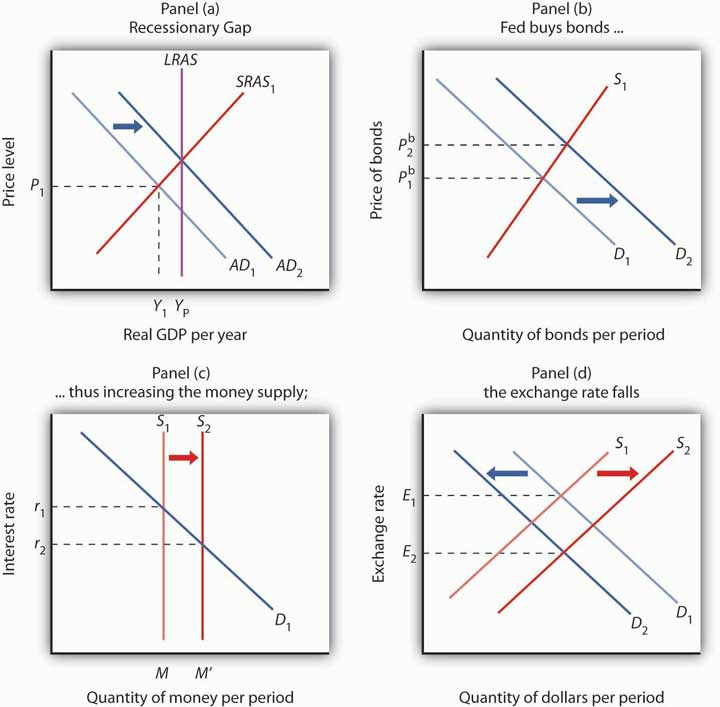
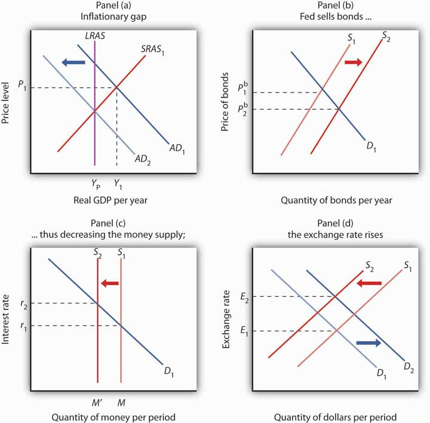

In many respects, the Fed is the most powerful maker of economic policy in the United States. Congress can pass laws, but the president must execute them; the president can propose laws, but only Congress can pass them. The Fed, however, both sets and carries out monetary policy. Deliberations about fiscal policy can drag on for months, even years, but the Federal Open Market Committee (FOMC) can, behind closed doors, set monetary policy in a day—and see that policy implemented within hours. The Board of Governors can change the discount rate or reserve requirements at any time. The impact of the Fed’s policies on the economy can be quite dramatic. The Fed can push interest rates up or down. It can promote a recession or an expansion. It can cause the inflation rate to rise or fall. The Fed wields enormous power.
But to what ends should all this power be directed? With what tools are the Fed’s policies carried out? And what problems exist in trying to achieve the Fed’s goals? This section reviews the goals of monetary policy, the tools available to the Fed in pursuing those goals, and the way in which monetary policy affects macroeconomic variables.
When we think of the goals of monetary policy, we naturally think of standards of macroeconomic performance that seem desirable—a low unemployment rate, a stable price level, and economic growth. It thus seems reasonable to conclude that the goals of monetary policy should include the maintenance of full employment, the avoidance of inflation or deflation, and the promotion of economic growth.
But these goals, each of which is desirable in itself, may conflict with one another. A monetary policy that helps to close a recessionary gap and thus promotes full employment may accelerate inflation. A monetary policy that seeks to reduce inflation may increase unemployment and weaken economic growth. You might expect that in such cases, monetary authorities would receive guidance from legislation spelling out goals for the Fed to pursue and specifying what to do when achieving one goal means not achieving another. But as we shall see, that kind of guidance does not exist.
When Congress established the Federal Reserve System in 1913, it said little about the policy goals the Fed should seek. The closest it came to spelling out the goals of monetary policy was in the first paragraph of the Federal Reserve Act, the legislation that created the Fed:
“An Act to provide for the establishment of Federal reserve banks, to furnish an elastic currency, [to make loans to banks], to establish a more effective supervision of banking in the United States, and for other purposes.”
In short, nothing in the legislation creating the Fed anticipates that the institution will act to close recessionary or inflationary gaps, that it will seek to spur economic growth, or that it will strive to keep the price level steady. There is no guidance as to what the Fed should do when these goals conflict with one another.
The first U.S. effort to specify macroeconomic goals came after World War II. The Great Depression of the 1930s had instilled in people a deep desire to prevent similar calamities in the future. That desire, coupled with the 1936 publication of John Maynard Keynes’s prescription for avoiding such problems through government policy (The General Theory of Employment, Interest and Money), led to the passage of the Employment Act of 1946, which declared that the federal government should “use all practical means . . . to promote maximum employment, production and purchasing power.” The act also created the Council of Economic Advisers (CEA) to advise the president on economic matters.
The Fed might be expected to be influenced by this specification of federal goals, but because it is an independent agency, it is not required to follow any particular path. Furthermore, the legislation does not suggest what should be done if the goals of achieving full employment and maximum purchasing power conflict.
The clearest, and most specific, statement of federal economic goals came in the Full Employment and Balanced Growth Act of 1978. This act, generally known as the Humphrey–Hawkins Act, specified that by 1983 the federal government should achieve an unemployment rate among adults of 3% or less, a civilian unemployment rate of 4% or less, and an inflation rate of 3% or less. Although these goals have the virtue of specificity, they offer little in terms of practical policy guidance. The last time the civilian unemployment rate in the United States fell below 4% was 1969, and the inflation rate that year was 6.2%. In 2000, the unemployment rate touched 4%, and the inflation rate that year was 3.4%, so the goals were close to being met. Except for 2007 when inflation hit 4.1%, inflation has hovered between 1.6% and 3.4% in all the other years between 1991 and 2011, so the inflation goal was met or nearly met, but unemployment fluctuated between 4.0% and 9.6% during those years.
The Humphrey-Hawkins Act requires that the chairman of the Fed’s Board of Governors report twice each year to Congress about the Fed’s monetary policy. These sessions provide an opportunity for members of the House and Senate to express their views on monetary policy.
Perhaps the clearest way to see the Fed’s goals is to observe the policy choices it makes. Since 1979, following a bout of double-digit inflation, its actions have suggested that the Fed’s primary goal is to keep inflation under control. Provided that the inflation rate falls within acceptable limits, however, the Fed will also use stimulative measures to attempt to close recessionary gaps.
In 1979, the Fed, then led by Paul Volcker, launched a deliberate program of reducing the inflation rate. It stuck to that effort through the early 1980s, even in the face of a major recession. That effort achieved its goal: the annual inflation rate fell from 13.3% in 1979 to 3.8% in 1982. The cost, however, was great. Unemployment soared past 9% during the recession. With the inflation rate below 4%, the Fed shifted to a stimulative policy early in 1983.
In 1990, when the economy slipped into a recession, the Fed, with Alan Greenspan at the helm, engaged in aggressive open-market operations to stimulate the economy, despite the fact that the inflation rate had jumped to 6.1%. Much of that increase in the inflation rate, however, resulted from an oil-price boost that came in the wake of Iraq’s invasion of Kuwait that year. A jump in prices that occurs at the same time as real GDP is slumping suggests a leftward shift in short-run aggregate supply, a shift that creates a recessionary gap. Fed officials concluded that the upturn in inflation in 1990 was a temporary phenomenon and that an expansionary policy was an appropriate response to a weak economy. Once the recovery was clearly under way, the Fed shifted to a neutral policy, seeking neither to boost nor to reduce aggregate demand. Early in 1994, the Fed shifted to a contractionary policy, selling bonds to reduce the money supply and raise interest rates. Then Fed Chairman Greenspan indicated that the move was intended to head off any possible increase in inflation from its 1993 rate of 2.7%. Although the economy was still in a recessionary gap when the Fed acted, Greenspan indicated that any acceleration of the inflation rate would be unacceptable.
By March 1997 the inflation rate had fallen to 2.4%. The Fed became concerned that inflationary pressures were increasing and tightened monetary policy, raising the goal for the federal funds interest rate to 5.5%. Inflation remained well below 2.0% throughout the rest of 1997 and 1998. In the fall of 1998, with inflation low, the Fed was concerned that the economic recession in much of Asia and slow growth in Europe would reduce growth in the United States. In quarter-point steps it reduced the goal for the federal funds rate to 4.75%. With real GDP growing briskly in the first half of 1999, the Fed became concerned that inflation would increase, even though the inflation rate at the time was about 2%, and in June 1999, it raised its goal for the federal funds rate to 5% and continued raising the rate until it reached 6.5% in May 2000.
With inflation under control, it then began lowering the federal funds rate to stimulate the economy. It continued lowering through the brief recession of 2001 and beyond. There were 11 rate cuts in 2001, with the rate at the end of that year at 1.75%; in late 2002 the rate was cut to 1.25%, and in mid-2003 it was cut to 1.0%.
Then, with growth picking up and inflation again a concern, the Fed began again in the middle of 2004 to increase rates. By the end of 2006, the rate stood at 5.25% as a result of 17 quarter-point rate increases.
Starting in September 2007, the Fed, since 2006 led by Ben Bernanke, shifted gears and began lowering the federal funds rate, mostly in larger steps or 0.5 to 0.75 percentage points. Though initially somewhat concerned with inflation, it sensed that the economy was beginning to slow down. It moved aggressively to lower rates over the course of the next 15 months, and by the end of 2008, the rate was targeted at between 0% and 0.25%. In late 2008 through 2011, beginning with the threat of deflation and then progressing into a period during which inflation ran fairly low, the Fed seemed quite willing to use all of its options to try to keep financial markets running smoothly. The Fed attempted, in the initial period, to moderate the recession, and then it tried to support the rather lackluster growth that followed. In January 2012, the Fed went on record to say that given its expectation that inflation would remain under control and that the economy would have slack, it anticipated keeping the federal funds rate at extremely low levels through late 2014.
What can we infer from these episodes in the 1980s, 1990s, and the first decade of this century? It seems clear that the Fed is determined not to allow the high inflation rates of the 1970s to occur again. When the inflation rate is within acceptable limits, the Fed will undertake stimulative measures in response to a recessionary gap or even in response to the possibility of a growth slowdown. Those limits seem to have tightened over time. In the late 1990s and early 2000s, it appeared that an inflation rate above 3%—or any indication that inflation might rise above 3%—would lead the Fed to adopt a contractionary policy. While on the Federal Reserve Board in the early 2000s, Ben Bernanke had been an advocate of inflation targeting. Under that system, the central bank announces its inflation target and then adjusts the federal funds rate if the inflation rate moves above or below the central bank’s target. Mr. Bernanke indicated his preferred target to be an expected increase in the price level, as measured by the price index for consumer goods and services excluding food and energy, of between 1% and 2%. Thus, the inflation goal appears to have tightened even more—to a rate of 2% or less. If inflation were expected to remain below 2%, however, the Fed would undertake stimulative measures to close a recessionary gap. Whether the Fed will hold to that goal will not really be tested until further macroeconomic experiences unfold.
We saw in an earlier chapter that the Fed has three tools at its command to try to change aggregate demand and thus to influence the level of economic activity. It can buy or sell federal government bonds through open-market operations, it can change the discount rate, or it can change reserve requirements. It can also use these tools in combination. In the next section of this chapter, where we discuss the notion of a liquidity trap, we will also introduce more extraordinary measures that the Fed has at its disposal.
Most economists agree that these tools of monetary policy affect the economy, but they sometimes disagree on the precise mechanisms through which this occurs, on the strength of those mechanisms, and on the ways in which monetary policy should be used. Before we address some of these issues, we shall review the ways in which monetary policy affects the economy in the context of the model of aggregate demand and aggregate supply. Our focus will be on open-market operations, the purchase or sale by the Fed of federal bonds.
The Fed might pursue an expansionary monetary policy in response to the initial situation shown in Panel (a) of Figure 26.1 "Expansionary Monetary Policy to Close a Recessionary Gap". An economy with a potential output of YP is operating at Y1; there is a recessionary gap. One possible policy response is to allow the economy to correct this gap on its own, waiting for reductions in nominal wages and other prices to shift the short-run aggregate supply curve SRAS1 to the right until it intersects the aggregate demand curve AD1 at YP. An alternative is a stabilization policy that seeks to increase aggregate demand to AD2 to close the gap. An expansionary monetary policy is one way to achieve such a shift.
To carry out an expansionary monetary policy, the Fed will buy bonds, thereby increasing the money supply. That shifts the demand curve for bonds to D2, as illustrated in Panel (b). Bond prices rise to Pb2. The higher price for bonds reduces the interest rate. These changes in the bond market are consistent with the changes in the money market, shown in Panel (c), in which the greater money supply leads to a fall in the interest rate to r2. The lower interest rate stimulates investment. In addition, the lower interest rate reduces the demand for and increases the supply of dollars in the currency market, reducing the exchange rate to E2 in Panel (d). The lower exchange rate will stimulate net exports. The combined impact of greater investment and net exports will shift the aggregate demand curve to the right. The curve shifts by an amount equal to the multiplier times the sum of the initial changes in investment and net exports. In Panel (a), this is shown as a shift to AD2, and the recessionary gap is closed.
Figure 26.1 Expansionary Monetary Policy to Close a Recessionary Gap
In Panel (a), the economy has a recessionary gap YP − Y1. An expansionary monetary policy could seek to close this gap by shifting the aggregate demand curve to AD2. In Panel (b), the Fed buys bonds, shifting the demand curve for bonds to D2 and increasing the price of bonds to Pb2. By buying bonds, the Fed increases the money supply to M′ in Panel (c). The Fed’s action lowers interest rates to r2. The lower interest rate also reduces the demand for and increases the supply of dollars, reducing the exchange rate to E2 in Panel (d). The resulting increases in investment and net exports shift the aggregate demand curve in Panel (a).
The Fed will generally pursue a contractionary monetary policy when it considers inflation a threat. Suppose, for example, that the economy faces an inflationary gap; the aggregate demand and short-run aggregate supply curves intersect to the right of the long-run aggregate supply curve, as shown in Panel (a) of Figure 26.2 "A Contractionary Monetary Policy to Close an Inflationary Gap".
Figure 26.2 A Contractionary Monetary Policy to Close an Inflationary Gap
In Panel (a), the economy has an inflationary gap Y1 − YP. A contractionary monetary policy could seek to close this gap by shifting the aggregate demand curve to AD2. In Panel (b), the Fed sells bonds, shifting the supply curve for bonds to S2 and lowering the price of bonds to Pb2. The lower price of bonds means a higher interest rate, r2, as shown in Panel (c). The higher interest rate also increases the demand for and decreases the supply of dollars, raising the exchange rate to E2 in Panel (d), which will increase net exports. The decreases in investment and net exports are responsible for decreasing aggregate demand in Panel (a).
To carry out a contractionary policy, the Fed sells bonds. In the bond market, shown in Panel (b) of Figure 26.2 "A Contractionary Monetary Policy to Close an Inflationary Gap", the supply curve shifts to the right, lowering the price of bonds and increasing the interest rate. In the money market, shown in Panel (c), the Fed’s bond sales reduce the money supply and raise the interest rate. The higher interest rate reduces investment. The higher interest rate also induces a greater demand for dollars as foreigners seek to take advantage of higher interest rates in the United States. The supply of dollars falls; people in the United States are less likely to purchase foreign interest-earning assets now that U.S. assets are paying a higher rate. These changes boost the exchange rate, as shown in Panel (d), which reduces exports and increases imports and thus causes net exports to fall. The contractionary monetary policy thus shifts aggregate demand to the left, by an amount equal to the multiplier times the combined initial changes in investment and net exports, as shown in Panel (a).
The figure shows an economy operating at a real GDP of Y1 and a price level of P1, at the intersection of AD1 and SRAS1.
Figure 26.3
With the passage of time and the fact that the fallout on the economy turned out to be relatively minor, it is hard in retrospect to realize how scary a situation Alan Greenspan and the Fed faced just two months after his appointment as Chairman of the Federal Reserve Board. On October 12, 1987, the stock market had its worst day ever. The Dow Jones Industrial Average plunged 508 points, wiping out more than $500 billion in a few hours of feverish trading on Wall Street. That drop represented a loss in value of over 22%. In comparison, the largest daily drop in 2008 of 778 points on September 29, 2008, represented a loss in value of about 7%.
When the Fed faced another huge plunge in stock prices in 1929—also in October—members of the Board of Governors met and decided that no action was necessary. Determined not to repeat the terrible mistake of 1929, one that helped to usher in the Great Depression, Alan Greenspan immediately reassured the country, saying that the Fed would provide adequate liquidity, by buying federal securities, to assure that economic activity would not fall. As it turned out, the damage to the economy was minor and the stock market quickly regained value.
In the fall of 1990, the economy began to slip into recession. The Fed responded with expansionary monetary policy—cutting reserve requirements, lowering the discount rate, and buying Treasury bonds.
Interest rates fell quite quickly in response to the Fed’s actions, but, as is often the case, changes to the components of aggregate demand were slower in coming. Consumption and investment began to rise in 1991, but their growth was weak, and unemployment continued to rise because growth in output was too slow to keep up with growth in the labor force. It was not until the fall of 1992 that the economy started to pick up steam. This episode demonstrates an important difficulty with stabilization policy: attempts to manipulate aggregate demand achieve shifts in the curve, but with a lag.
Throughout the rest of the 1990s, with some tightening when the economy seemed to be moving into an inflationary gap and some loosening when the economy seemed to be possibly moving toward a recessionary gap—especially in 1998 and 1999 when parts of Asia experienced financial turmoil and recession and European growth had slowed down—the Fed helped steer what is now referred to as the Goldilocks (not too hot, not too cold, just right) economy.
The U.S. economy again experienced a mild recession in 2001 under Greenspan. At that time, the Fed systematically conducted expansionary policy. Similar to its response to the 1987 stock market crash, the Fed has been credited with maintaining liquidity following the dot-com stock market crash in early 2001 and the attacks on the World Trade Center and the Pentagon in September 2001.
When Greenspan retired in January 2006, many hailed him as the greatest central banker ever. As the economy faltered in 2008 and as the financial crisis unfolded throughout the year, however, the question of how the policies of Greenspan’s Fed played into the current difficulties took center stage. Testifying before Congress in October 2008, he said that the country faces a “once-in-a-century credit tsunami,” and he admitted, “I made a mistake in presuming that the self-interests of organizations, specifically banks and others, were such as that they were best capable of protecting their own shareholders and their equity in their firms.” The criticisms he has faced are twofold: that the very low interest rates used to fight the 2001 recession and maintained for too long fueled the real estate bubble and that he did not promote appropriate regulations to deal with the new financial instruments that were created in the early 2000s. While supporting some additional regulations when he testified before Congress, he also warned that overreacting could be dangerous: “We have to recognize that this is almost surely a once-in-a-century phenomenon, and, in that regard, to realize the types of regulation that would prevent this from happening in the future are so onerous as to basically suppress the growth rate in the economy and . . . the standards of living of the American people.”